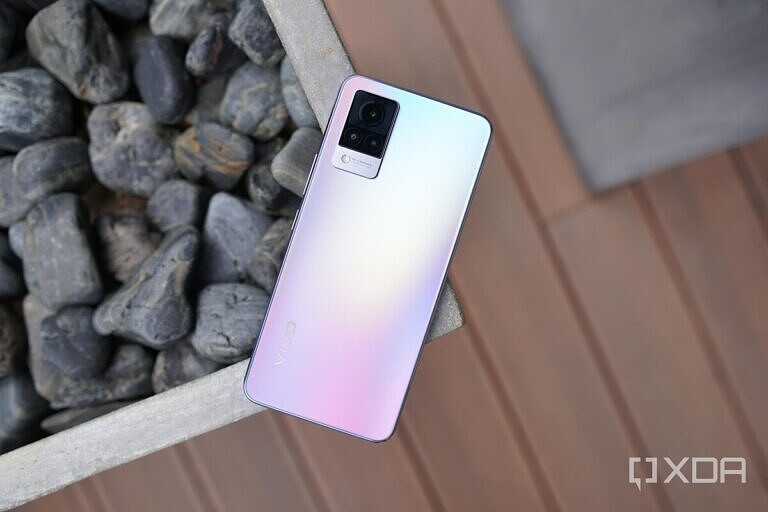
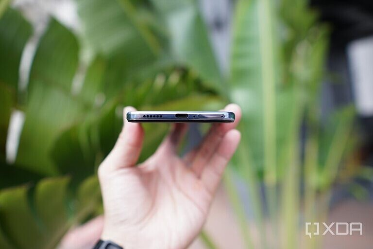
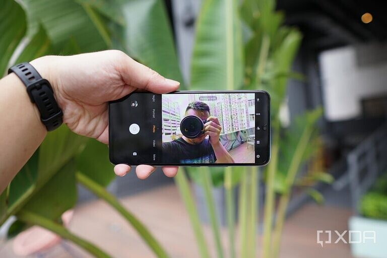

Vivo’s prolific selfie-centric V series is back with an update just six months after the last release. In the new Vivo V21, Vivo has added an optical image stabilization module to the front-facing 44MP camera as well as two forward-facing flash lights….and not much else. Is this enough to justify an upgrade? Is the selfie experience that much superior to, say, the iPhone 12’s?
Vivo V21 5G design and hardware
The Vivo V21 5G uncharacteristically keeps almost the exact same design as last fall’s Vivo V20 series (previous V devices had changed their design wholesale with each generation). This is mostly a good thing, as I thought the V20 series looked quite good.
The new Vivo V21 5G is light (179g) and thin (7.29mm), and its flat 6.4-inch panel should please most people, as it’s neither too large nor curved. My unit features a gradient glass back (it also comes in a deep blue color) that looks great and doesn’t attract fingerprints due to the matte coating.
In fact, the only visual change I can tell between the Vivo V21 5G and the V20 is that the aluminum chassis that wraps around the top, bottom, left, and right has been made slightly thicker, making it almost resemble a bumper. It’s a look I like — it sort of resembles the iPhone 12’s flat sides.
However, some of the disappointing hardware features of the V20 are still here. The Vivo V21 5G still sports a notch to house its selfie camera instead of the more modern hole-punch design, and the phone only has a single bottom-firing speaker that doesn’t get very loud.
The main camera system also features a mostly pointless 2MP depth sensor and the 8MP ultra-wide is weak, but at least the 64MP main camera is solid. The 4,000 mAh battery and MediaTek Dimensity 800U SoC are just decent offerings in 2021 even when compared against other devices in its mid-tier, sub-$400 price range.
But the whole point of the Vivo V21 is its selfie camera anyway, which features eye-popping hardware: a 44MP sensor with OIS and two flashes, and software tricks such as eye auto-focus (like the ones used by Sony mirrorless cameras). So for this piece, we’re mostly focusing on the V21’s selfie camera performance.
Vivo V21 5G selfie camera
When I tested the Vivo V20 Pro last fall, I concluded that its 44MP selfie camera was indeed better than the front-facing cameras of other phones I owned. Even compared to the much more expensive flagships like the iPhone 11 Pro, the V20 Pro’s selfies were consistently sharper with noticeably better dynamic range if I’m shooting against harsh backlight, plus it performed better in low light conditions, too.
The Vivo V21 5G has basically the same 44MP sensor but with the addition of OIS, so it should result in another easy win, right? Not exactly. That’s mainly because Apple has improved its camera software significantly between the iPhone 11 and the iPhone 12, particularly in low light or harsh backlight shots. In the below samples, I captured my face against very harsh sunlight to see how the two cameras handle dynamic range.
Sure, there are more shadows to be found all over the iPhone’s image — on my face, under the tunnel bridge, and even in the clouds — so Vivo’s image is “brighter,” but brighter isn’t always better. Shadows often add contrast and mood, and they have their rightful place in photos. So really, to determine which photo is better depends on your taste. Vivo’s shot is perfectly balanced to the point it looks superficial, whereas the iPhone’s shot maintains some semblance of realism — that is my face should be drenched in shadows under such harsh lighting. A lesser selfie camera (say, the iPhone 11) would have either completely blown out the sky to highlight my face, or my face would be covered in darkness. In other words, both of these shots are good — they just cater to different tastes.
Moving onto portrait selfies, again both the Vivo V21 5G and the iPhone 12 produce excellent shots with somewhat realistic bokeh. As is usual with these comparisons, the Chinese phone does a bit more processing with my skin tone while Apple keeps the shot more realistic, hence why you can see more wrinkles and skin imperfections in the iPhone 12 shot. Vivo appeared to have cleaned up my skin tone a bit to make colors look consistent, whereas my forehead looks a bit red in the iPhone 12 shot (probably because it was a very hot day).

Moving to moderate low night selfies, we can see that the Vivo V21 5G’s front-facing camera pulls in significantly more light than the iPhone 12’s — my face in Vivo’s shot is well illuminated while it’s slightly dark in the iPhone 12’s — but at the expense of blowing out the city lights behind me. Because this is just a moderately low light shot, neither phone’s night mode kicked in.
In extreme low light shooting conditions, the Vivo V21 5G offers multiple ways to add light. There’s simply using night mode, which requires holding the phone still for several seconds. There’s the aforementioned double flash light, which I find far too harsh. Finally, the third option, “Aura,” uses the display’s light to serve as a fill light.
The iPhone 12 offers just two options to take low-light selfies: night mode or with a single flash. I’m just going to say upfront that I find myself looking very bad in all shots with flash, whether it’s Vivo’s double flash or fill light. Maybe it’s because I have bad skin (acne scars, blemishes, dark eye circles from decades of being a night owl), and a more youthful, better-looking person may benefit from the flash. But for me, I look terrible in all these shots.
If I turn on night mode, the iPhone’s shot improves drastically, but Vivo’s night mode just over-processed my face to the point I look like a ghost.
At least from my testing, the iPhone 12’s selfie camera fares better in extremely low light conditions.
But of course, the big selling point of the Vivo V21 5G this year is the addition of OIS to the front-facing camera, and this will mostly be of use during video recording. From my testing, the Vivo V21 5G’s OIS does work to produce a more stable video when I’m moving, but the iPhone 12’s EIS is also excellent (perhaps best in class), and the differences in stability aren’t that far off. In fact, you can only really notice the slightly more stable footage as I walked up and down a couple of steps at the 0:04 and 0:08 mark of the video below. Whether it’s day or night, Vivo’s video keeps my face better lit but blows out the city lights behind me. The iPhone 12 finds a better balance of keeping exposure.
Vivo V21 5G early thoughts
The Vivo V21 5G’s price will depend on region, and so far Vivo has only announced pricing in Malaysia, which came out to around $390. We can expect the device to be priced similarly in India (being announced on April 29) and other parts of Southeast Asia. However, for Europe, I have a feeling the price will jump a bit. At this price range I’m not sure the Vivo V21 5G is a worthy purchase for most people. You can find superior SoCs, displays and main camera array at the same price range if you buy something from Redmi or Realme. However, for selfie fans who really need to film themselves walking and talking (aspiring TikTokers, maybe?), the Vivo V21 5G’s selfie cam with OIS does bring a slight advantage.
But the V series has always been a niche series catering to a specific group, and this continues the trend.